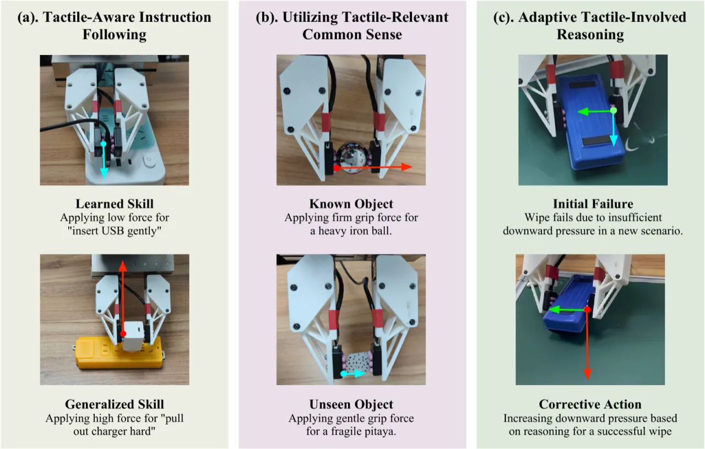
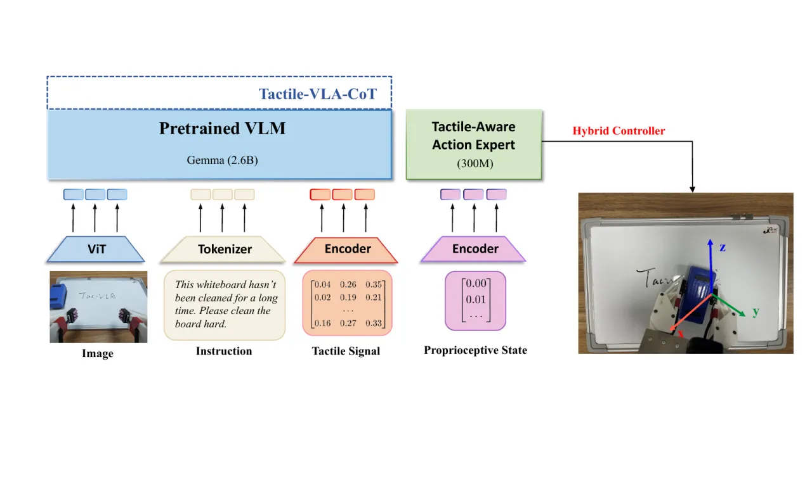
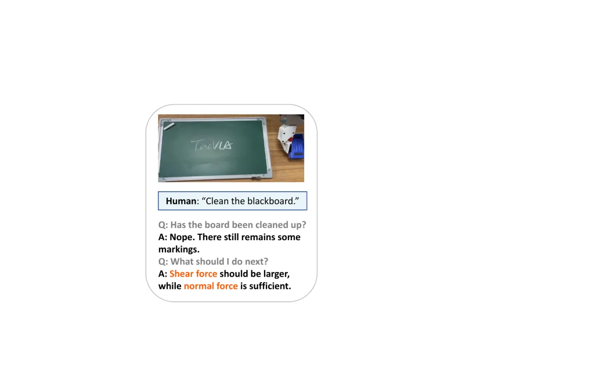
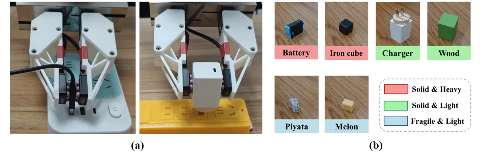
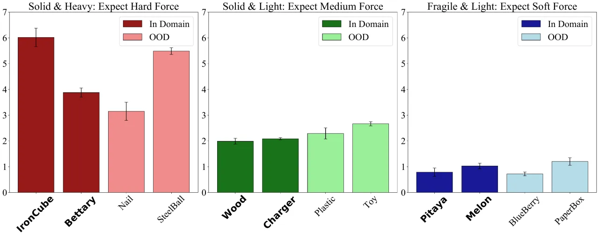
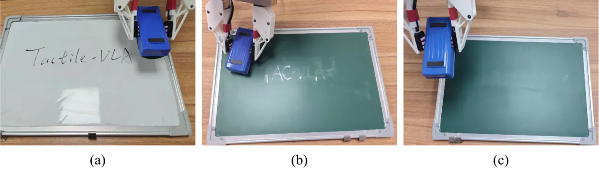

Tactile-VLA 将视觉、语言、动作与触觉感知深度融合，发现 VLA 模型已潜在地编码了物理交互的语义知识—— 只需少量示范，即可将其激活，在接触密集型操作任务中实现零样本力控泛化。
Vision-Language-Action (VLA) 模型凭借强大的视觉-语言先验在机器人操作中展现出令人印象深刻的泛化能力， 但在接触密集型任务中，它们仍无法将抽象的语义意图精确地落地为细粒度的力控交互。 力感知（tactile sensing）是弥补这一鸿沟的关键缺失环节。
"We advance VLAs' implicit knowledge beyond identifying what to do, towards guiding how to physically interact with real world."

当前 VLA 模型（如 π₀、π₀-fast）擅长高层次规划，但在接触密集型场景中缺乏对力控制的精细感知与调节能力。 现有将触觉/力觉引入机器人框架的工作通常将其作为附加感知模态，而非直接参与动作生成的核心要素。 Tactile-VLA 的核心洞见是：VLA 模型的语言骨干已隐式编码了丰富的物理交互知识（例如"softly"与"firmly"对应的力度差异）， 只需将触觉传感器与少量示范数据"桥接"进来，便可将这种先验激活并泛化至全新场景。
论文聚焦三类泛化能力，分别对应三个研究问题：
Tactile-VLA 由三个核心模块构成：多模态 Token 级融合策略网络、 混合位置-力控制器（Hybrid Position-Force Controller）， 以及用于自适应推理的 Tactile-VLA-CoT 变体。

模型基于 π₀ 的预训练参数初始化共享组件（ViT 视觉编码器 E'_vis、语言 tokenizer E_lang）， 新增一个轻量级 MLP 触觉编码器 E'_ψ，将历史 H 步触觉测量值压缩为单一 token， 与视觉和语言 token 拼接形成前缀序列：
S_t = [E'_vis(I_{t-H+1}), …, E'_vis(I_t), E_lang(L_t), E'_ψ([T_{t-H+1}, …, T_t])]
动作空间扩展为增强向量 a_t，显式包含目标位置 P_target 和目标接触力 F_target。 端到端采用 Conditional Flow Matching (CFM) 目标函数微调， 损失同时惩罚运动维度和力维度的预测偏差，迫使模型将语言细微差别（如"gently"）映射至对应物理力幅（如 0.5 N）。
策略网络的输出由低层控制器执行。该控制器遵循"位置主导"策略，采用类似阻抗控制的间接力控方法， 将力目标转化为位置命令的自适应调整：
P_hybrid = P_target + K · ΔF (当 ‖ΔF‖ > τ 时); 否则无调整
其中 ΔF = F_target − F_measured 为力误差，K 为增益矩阵，τ 为平滑阈值。 控制器将外部净力（通过末端执行器笛卡尔位置调节）与内部抓握力（通过夹爪宽度调节） 解耦为两条独立控制通道，从而同时精确管理接触力和抓握力。
Tactile-VLA-CoT 变体激活 VLM 自身预训练解码器的推理能力，以 Chain-of-Thought 方式 将触觉反馈转化为显式内部独白（explicit internal monologue）。 当任务失败时，模型分析失败原因（如"grasping force is sufficient, but normal force is too low"） 并生成修正指令（如"wipe the board again, but apply more downward force"）。 CoT 在固定时间间隔触发，首先判断任务是否成功，若失败则分析原因并输出修正动作指令。

传统遥操作因缺乏真实力反馈，导致采集策略无法依赖触觉信息。 作者基于 Universal Manipulation Interface (UMI) 构建专用数据采集装置， 在 UMI 夹爪上增配双高分辨率触觉传感器，可捕获法向力和剪切力，使操作员能够直接感知接触动力学。 数据以 100 Hz 采集触觉反馈、20 Hz 采集视觉数据，并进行时间戳对齐， 最终形成精确同步的多模态 VLA-T 训练数据集。
实验聚焦三类接触密集型操作任务：充电器/USB 插拔与抽取、 桌面抓取（Tabletop Grasping）、擦板（Wiping the Board）。 基线包括 π₀-base 和 π₀-fast，均不具备触觉融合架构。
模型在 USB 插拔任务（Task A）中以含力副词的指令（"softly" / "hard"）训练， 随后零样本迁移至充电器插拔任务（Task B，仅学过运动，无力指令）。 评估指标为成功率（%）和施加插入力（N）。
| 模型 | USB 成功率 (%) | 充电器成功率 (%) |
|---|---|---|
| π₀-base | 5 | 40 |
| π₀-fast | 0 | 25 |
| Tactile-VLA | 35 | 90 |
力控泛化结果（Table 2）更直接展示了语义-力映射的泛化性：
| 模型 | 'softly' (已训练) | 'hard' (已训练) | 'gently' (迁移) | 'firmly' (迁移) | 'harder' (外推) | Charger 'softly' (零样本) | Charger 'hard' (零样本) |
|---|---|---|---|---|---|---|---|
| π₀ | 2.41 N | 2.68 N | 2.35 N | 2.72 N | 2.29 N | 6.61 N | 5.69 N |
| π₀-fast | 2.61 N | 2.33 N | 2.79 N | 2.45 N | 2.58 N | 7.37 N | 6.42 N |
| Tactile-VLA | 0.51 N | 2.57 N | 0.75 N | 1.98 N | 2.94 N | 4.68 N | 9.13 N |
Tactile-VLA 正确区分已训练词汇的力度（"softly": 0.51 N vs "hard": 2.57 N）， 并对未见副词（"gently" 0.75 N、"firmly" 1.98 N）和超范围指令（"harder" 2.94 N，超过 "hard" 的 2.57 N）做出合理外推。 基线模型在所有条件下施力均无显著差异——说明其缺乏将语言与力相关联的机制。

桌面抓取实验要求机器人根据物体外观自动推断合适的抓握力， 不提供显式力指令。训练集覆盖 6 个 in-domain 物体，测试时引入额外 6 个 out-of-domain 物体。 成功标准：单次抓取，无明显形变。
| 模型 | 重/坚硬 ID | 重/坚硬 OOD | 轻/坚实 ID | 轻/坚实 OOD | 轻/易碎 ID | 轻/易碎 OOD |
|---|---|---|---|---|---|---|
| π₀-base | 90% | 45% | 65% | 35% | 25% | 0% |
| π₀-fast | 65% | 40% | 60% | 35% | 25% | 0% |
| Tactile-VLA | 95% | 95% | 95% | 85% | 85% | 95% |
（注：表中数值为论文 Table 2 各列均值简化呈现，原始数据按单件物体 10 次试验报告，详见原文。）

模型在白板擦拭场景（marker ink）训练，零样本迁移至黑板擦拭（chalk）——后者需要显著更大的力。
| 模型 | 白板（In-Domain） | 黑板（OOD，零样本） |
|---|---|---|
| π₀-base | 40% | 0% |
| π₀-fast | 45% | 0% |
| Tactile-VLA | 80% | 15% |
| Tactile-VLA-CoT | 75% | 80% |

在零样本黑板场景中，Tactile-VLA-CoT 的成功率达 80%， 而所有基线为 0%。 关键推理链路：初次施力 3.5 N → 识别失败（触觉信号显示法向力不足）→ 输出修正指令 → 增力至 6.7 N → 任务成功。
论文明确指出，传统遥操作因缺乏真实力反馈而不适合此类任务。 作者基于 UMI 搭建了专用数据采集装置，配备双高分辨率触觉传感器。 这意味着数据采集门槛较高，需要特定硬件支持，限制了方法在标准遥操作平台上的直接可复现性。
当前实验仅涵盖三类任务（插拔、抓取、擦板），均为相对受控的桌面场景。 在更复杂、非结构化或需要多步骤接触的真实环境中， VLM 的物理先验能否持续有效激活仍有待验证。
Tactile-VLA-CoT 的推理在"固定时间间隔"触发，属于简单有效但非最优的触发策略。 对于需要即时响应的快速失败场景，固定间隔可能引入不必要的延迟； 对于慢速稳定操作，频繁触发则可能浪费计算资源。 更智能的事件驱动触发机制（如力突变检测）有望进一步提升系统表现。
在零样本黑板擦拭任务中，基础 Tactile-VLA（无 CoT）的成功率仅为 15%， 而 Tactile-VLA-CoT 达到 80%。这说明仅靠端到端力控学习， 在物理属性显著不同的新场景中，自适应能力受限； CoT 推理模块是实现跨场景鲁棒泛化的关键补丁，而非基础架构本身就能覆盖。